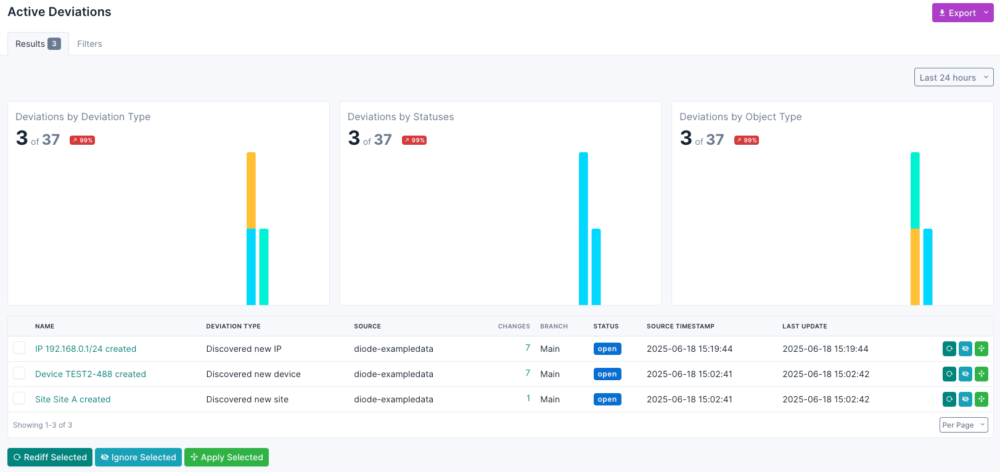
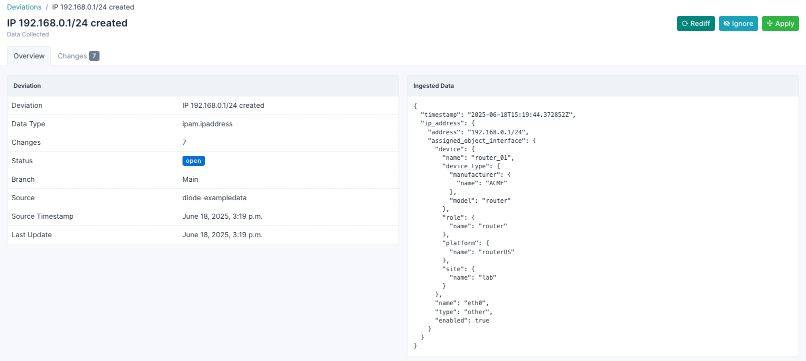

Using the NetBox Assurance UI
NetBox Cloud NetBox Enterprise
The NetBox Assurance plugin provides a comprehensive web interface within NetBox for monitoring network drift, viewing deviation reports, and managing remediation workflows. The plugin integrates seamlessly with NetBox's existing interface while providing specialized tools for network assurance.
New to NetBox Assurance?
If you're just getting started, check out the Getting Started Guide for setup instructions and initial configuration before diving into the UI details below.
Navigation
Once the NetBox Assurance plugin is installed, you'll find the Assurance menu in the NetBox sidebar with the following sections:
Deviation Types
- Deviation Types: Browse and manage different types of network deviations that can be detected

Deviations
- Active Deviations: View currently unresolved configuration deviations
- All Deviations: Complete list of all detected deviations (active and resolved)
- Archived Deviations: Historical view of resolved or archived deviations
Main Deviation Views
All Deviations List
The main deviations page provides a comprehensive overview of all detected network drift:
Key Features: - Visual Charts: Timeline charts showing deviation trends and patterns - Filterable Table: Search and filter deviations by various criteria - Export Options: Export deviation data in multiple formats - Bulk Actions: Apply actions to multiple deviations simultaneously
Available Filters: - Date range selection for focused analysis - Deviation type filtering - Status-based filtering - Source-based filtering
Active Deviations
Shows only unresolved deviations that require attention: - Real-time view of current network drift - Prioritized by detection date - Immediate action items for network operations teams

Archived Deviations
Historical view of resolved deviations: - Track remediation history - Analyze patterns in network drift - Compliance reporting and auditing
Deviation Detail View
When you click on a specific deviation, you'll see detailed information:
Overview Tab
Deviation Information: - Deviation name and identifier - Data type affected - Number of changes detected - Current status with visual indicators - Branch information (if using NetBox branching) - Source system and timestamp - Last update information
Ingested Data Panel: - Raw data that was ingested from the network - Formatted JSON view for technical analysis
Error Details (if applicable): - Error messages for failed operations - Detailed error information for troubleshooting

Changes Tab
- Detailed view of specific configuration changes
- Object-by-object comparison
- Before/after state visualization

Bulk Operations
The deviation list supports several bulk operations:
Rediff Selected
- Re-analyze selected deviations
- Useful when network state may have changed
- Updates deviation status based on current conditions
Ignore Selected
- Mark deviations as acceptable
- Removes them from active monitoring
- Useful for planned configuration differences
Apply Selected
- Automatically remediate selected deviations
- Applies corrections based on predefined rules
- Updates NetBox or network devices as configured
Data Visualization
Timeline Charts
- Visual representation of deviation trends over time
- Stacked bar charts showing deviation types
- Customizable date ranges for analysis
- Color-coded by deviation status
Status Indicators
Deviations are marked with clear visual indicators: - Active: Requires attention - Applied: Successfully remediated - Failed: Remediation attempt failed - Ignored: Marked as acceptable
Export and Reporting
Export Options
- Current View: Export filtered results
- All Data: Complete deviation dataset
- Custom Templates: Use predefined export formats
Supported Formats
- Table format for immediate viewing
- Structured data formats for integration
- Custom export templates for specific reporting needs
Integration Features
NetBox Integration
- Seamless integration with NetBox's existing interface
- Respects NetBox's user permissions and roles
- Consistent styling and user experience
- Integration with NetBox's change logging system
Branching Support
- Compatible with NetBox branching features
- Branch-specific deviation tracking
- Branch information displayed in deviation details
Workflow Best Practices
Daily Operations
- Review Active Deviations: Start with the active deviations view
- Analyze Trends: Check timeline charts for patterns
- Prioritize Actions: Focus on critical deviations first
- Bulk Processing: Use bulk actions for similar deviations
Investigation Process
- Drill Down: Click on deviations for detailed analysis
- Review Changes: Examine specific configuration differences
- Check Source Data: Verify ingested data accuracy
- Determine Action: Decide between applying, ignoring, or escalating
Remediation Workflow
- Select Appropriate Action: Choose between update NetBox or correct device
- Use Bulk Operations: Process similar deviations together
- Monitor Results: Verify successful remediation
- Document Decisions: Use NetBox's change logging for audit trails
Troubleshooting
Common Issues
- Failed Deviations: Check error details for specific failure reasons
- Missing Data: Verify source system connectivity
- Permission Issues: Ensure proper NetBox user permissions
Performance Considerations
- Use date range filters to limit large datasets
- Export data in smaller chunks for better performance
- Leverage bulk operations for efficiency
Next Steps and Resources
Setting Up Data Sources
If you haven't already configured data ingestion, review these guides: - NetBox Discovery Setup - Automated network discovery and data collection - Diode Integration - Custom data ingestion using APIs and SDKs
Operational Integration
- Getting Started Guide - Complete setup and workflow recommendations
- Change Management: Integrate Assurance workflows with your existing change management processes
- Team Training: Ensure team members understand deviation triage and remediation workflows
Advanced Configuration
- Custom Deviation Types: Configure specific deviation types for your environment
- Integration Workflows: Set up automated responses to specific deviation patterns
- Reporting Templates: Create custom export templates for compliance and operational reporting
The NetBox Assurance UI provides a powerful platform for managing network drift detection and remediation, helping maintain consistency between your documented network design and operational reality through an intuitive web interface.